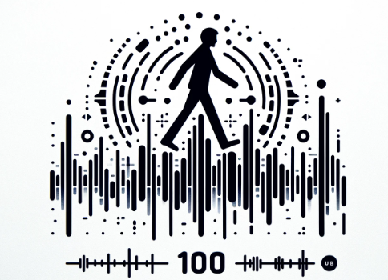
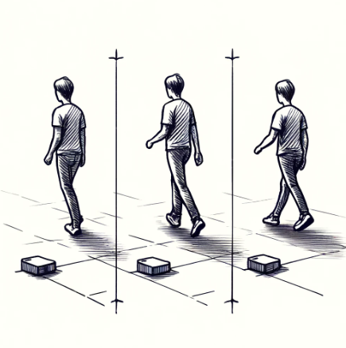
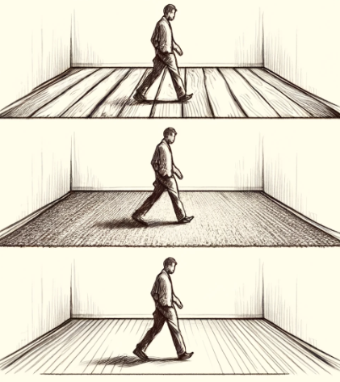
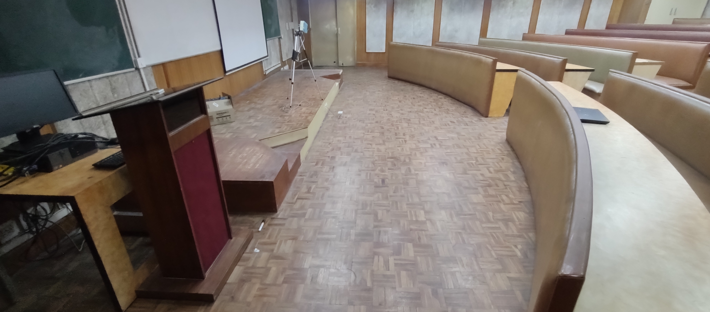
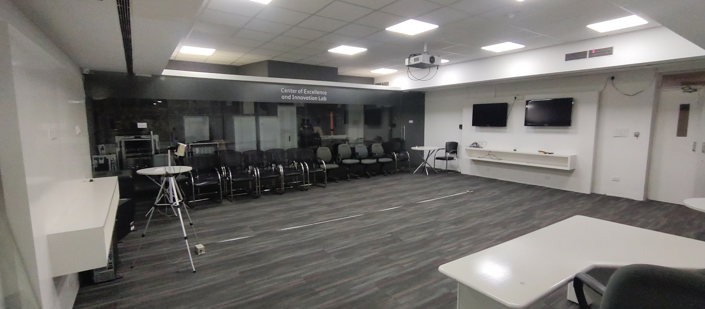
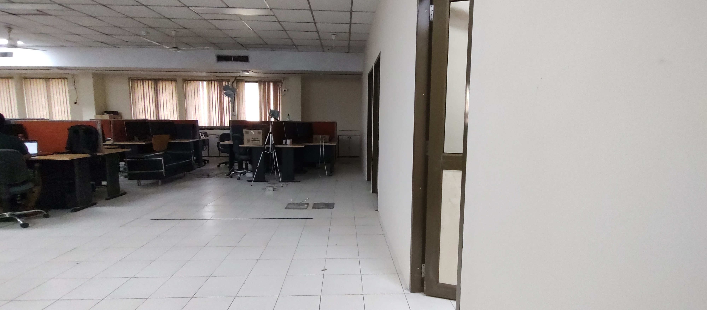
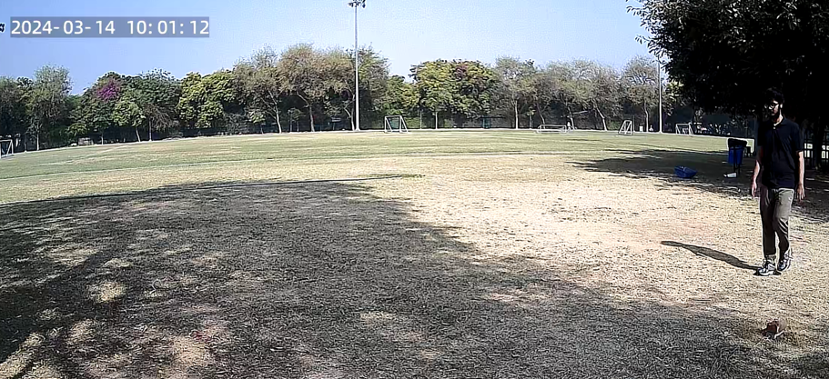

VIBeID: A Structural Vibration-based Soft Biometric Dataset and Benchmark for Person Identification
Under Review
*If the OSF is down, directly download from OnedriveAbstract
We present VIBeID, a dataset and benchmark designed for advancing non-invasive person identification through structural vibration. Structural vibrations, produced by the rhythmic impact of the toe and heel on the ground, are distinct and can be used as a privacy-preserving and non-cooperative soft-biometric modality. We curated the largest dataset VIBeID consists of footfall generated structural vibrations of 100 subjects. Existing datasets in this field typically include around ten subjects and lack comprehensive exploration of domain adaptation. To thoroughly explore the domain adaptation aspect of this biometric approach, we recorded vibration data on three distinct floor types (wooden, carpet, and cement) and at three distances from the geophone sensor (1.5 m, 2.5 m, and 4.0 m), involving 40 and 30 subjects, respectively. Additionally, we benchmarked our dataset against video recordings from 15 individuals in an outdoor setting. Beyond providing 88.66 hours of raw vibration data, VIBeID establishes a comprehensive benchmark for a) person identification: where the aim is to recognize individuals through their unique structural vibrations, b) domain adaptation: assessing model performance across different walking surfaces and sensor positions, and c) multi-modal comparison: comparing vibration-based and vision-based identification methods. Our experiments, using both machine learning and deep learning approaches, establish a baseline for future research in this field.
Raw Dataset
The dataset is hosted on OSF: Dataset OSF
The dataset is hosted on Onedrive: Dataset Onedrive
Pre-Processed Dataset Links
VIBeID A1

VIBeID A2
VIBeID A3
VIBeID A4.1
VIBeID A4.2
The compressed archives include raw recordings of vibration and visual data for all the subdatasets used in our experiments. Subdatasets are sorted by their use cases.
- VIBeID A1 subdataset is for Person Identification, it consists of 100 participants, 68 males, and 32 females spanning 20-60 years. Each individual has 20 minutes of recorded data. The pre-preprocessed signal dataset is available on kaggle: A1 Signal Data and code is available of Code
- VIBeID A2 subdataset is for Multi-Distance analysis, it consists of 30 participants, 16 males, and 14 females. Each individual has 15 minutes of recorded data for each distances (1.5m, 2.5m and 4.0m). The pre-preprocessed signal dataset is available on kaggle: A2 Signal Data and code is available of Code
- VIBeID A3 subdataset is for Multi-Structure analysis, it consists of 40 participants, 23 males, and 17 females. Each individual has 15 minutes of recorded for each floor type (wooden, carpet, and cement). The pre-preprocessed signal dataset is available on kaggle: A3 Signal Data and code is available of Code
- VIBeID A4 subdataset is for Multi-Modal analysis, it consists of 15 participants, -- males, and -- females. VIBeID A4 subdataset consists of 2 modalities, 1 vibration and 1 vision. VIBeID A4.1 consists of vibration data of 10 minutes for each participants, whereas VIBeID A4.2a, and A4.2b are 2 vision based data of 10 minutes for each participants. The pre-preprocessed signal dataset is available on kaggle: A4.1 Signal Data and code is available of Code
Setup Locations
Wooden Floor
Carpet Floor
Cement Floor
Outdoor Ground
- Wooden Floor represents VIBeID A3.1 dataset location, where 30 individuals consists of 23 Males, 17 Females walks for 15 minutes at a distance of around 2.5m - 4.0m from a geophone sensor.
- Carpet Floor represents VIBeID A3.2 dataset location, where all the same individuals who walked for VIBeID A3.1 were asked to walk for 15 minutes.
- Cement Floor represents VIBeID A3.3 dataset location, where all the same individuals who walked for VIBeID A3.1 were asked to walk for 15 minutes.
- Outdoor represents VIBeID A4.1 and VIBeID 4.2 dataset location, where 15 individuals consists of 9 Males, 6Females walked for 10 minutes at a distance of around 4.0m from a geophone sensor and cameras.
Below, we show Visual depiction of VIBeID A4’s data collection framework showcasing structural vibration signals, and Signal envelope (Hilbert Transform) in outdoor scenario.
Use Cases
The VIBeID dataset can be used for:
- Person Identification : can be perfomed using Multi-Class Classification techniques on VIBeID A1 dataset.
- Multi-Distance : VIBeID A2 dataset can be used to evaluate how performance of model can be influenced when data is recorded at distinct distances.
- Multi-structure : VIBeID A3 dataset can be used to evaluate how structural properties impact the performance of model in person identification.
- Multi-Modal Analysis : VIBeID A4 dataset is used for performance comparison of vision-based systems and vibration-based systems.
Dataset details and preparation
Our preprocessed data will serve most use cases. To ensure privacy and identity protection, participants are anonymized and referred to by identifiers such as P1, P2, and so on. The raw dataset details are listed below :
VIBeID A1 Details
The VIBeID A1 dataset comprises recordings from 100 participants, each of whom walked for 20 minutes. The data was captured using geophones on wooden floor. Each person completed four sets of 5-minute walks. he Figure belows shows the data collection on wooden floor for VIBeID A3.1 of Person 14.

VIBeID A1 dataset file contains
- One folder for each human in the dataset
- Folder names are mentioned as P1, P2, ..., P100
- Each folder consists of atleast 4 mat files, each worth of 5 minutes of vibration data
- each File names follows FolderName_FileNumber, like P1_1.mat, P1_2.mat, ...
VIBeID A2 details
The VIBeID A2 dataset comprises recordings from 30 participants, each of whom walked for 15 minutes at three different distances (1.5 m, 2.5 m, and 4.0 m) from geophone sensors. The data was recorded on cement floor. Each person completed three sets of 5-minute walks. The figure below depicts the setup location for collecting the VIBeID A1 dataset.

VIBeID A2 dataset file contains
- 3 folder for 3 different distances in the dataset
- A2_1 represents vibration data recorded at 1.5m far from the geophone sensor
- A2_1 represents vibration data recorded at 2.5m far from the geophone sensor
- A2_3 represents vibration data recorded at 4.0m far from the geophone sensor
- Each folder (A2_1, A2_2, and A2_3) has one folder for each human in the dataset
- Folder names are mentioned as P1, P2, ..., P30
- Each folder consists of atleast 3 mat files, each worth of 5 minutes of vibration data
- Each File names follows FolderName_FileNumber, like P1_1.mat, P1_2.mat, ...
VIBeID A3 details
The VIBeID A3 dataset comprises recordings from 40 participants, each of whom walked for 15 minutes at three floors (Wooden, Carpet, Cement) from geophone sensors. Each person completed three sets of 5-minute walks.
The Figure belows shows the different floors used for A3.
VIBeID A3 dataset file contains
- 3 folder for 3 different distances in the dataset
- A3_1 represents vibration data on Wooden floor
- A3_2 represents vibration data on Carpet floor
- A3_3 represents vibration data on Cement floor
- Each folder (A3_1, A3_2, and A3_3) has one folder for each human in the dataset
- Folder names are mentioned as P1, P2, ..., P40
- Each folder consists of atleast 3 mat files, each worth of 5 minutes of vibration data
- Each File names follows FolderName_FileNumber, like P1_1.mat, P1_2.mat, ...
VIBeID A4 details
The Figure belows shows how GEI is calculated for VIBeID A4.2.
VIBeID A4 dataset file contains
- 3 folder 1 for vibration data, 2 for camera data in the dataset
- A4_1 represents vibration data on Wooden Floor
- A4_2a represents vision data from Right camera
- A4_2b represents vision data from Left camera
- Each folder (A4_1, A4_2a, and A4_2b) has one folder for each human in the dataset
- Folder names are mentioned as P1, P2, ..., P15
- In A4_1, each subfolder consists of 1 mat file, each worth of 10 minutes of vibration data
- Each File names follows FolderName_FileNumber, like P1_1.mat, P1_2.mat, ...
- In A4_2a, and A4_2b, each subfolder consists of Folder as P1, P2, ..., P15
- Each Folder consists of human silhouettes like frame_0,...frame_n
- Each folder consists of atleast 2000-5000 .png/.jpg files
Maintenance
Mainak Chakraborty and Chandan are maintaining the dataset.Mainak Chakraborty can be contacted at Mainak.Chakraborty@iddc.iitd.ac.in, and Chandan can be contacted at chandan@ee.iitd.ac.in.
Please contact us if you notice any errors or have any suggestion with the dataset. To the extent that we notice errors, they will be fixed and the dataset will be updated. Previous versions of the dataset will be maintained below and errors and previous versions will be posted below.